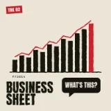
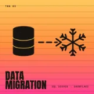
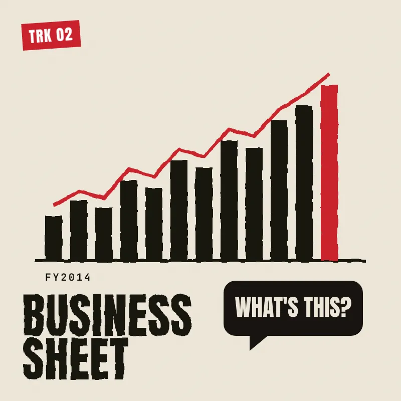
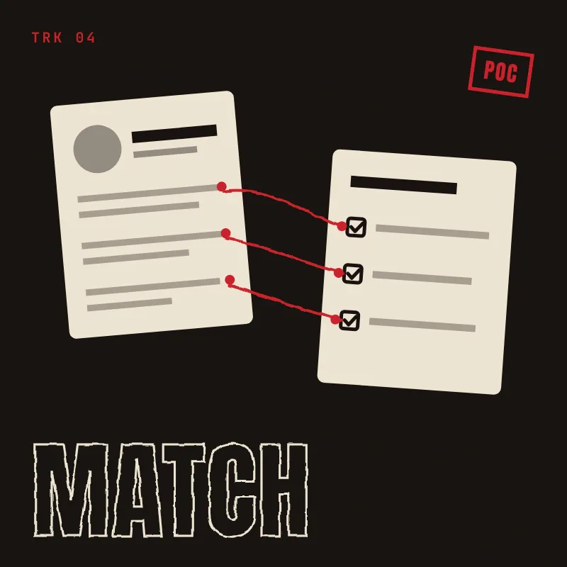
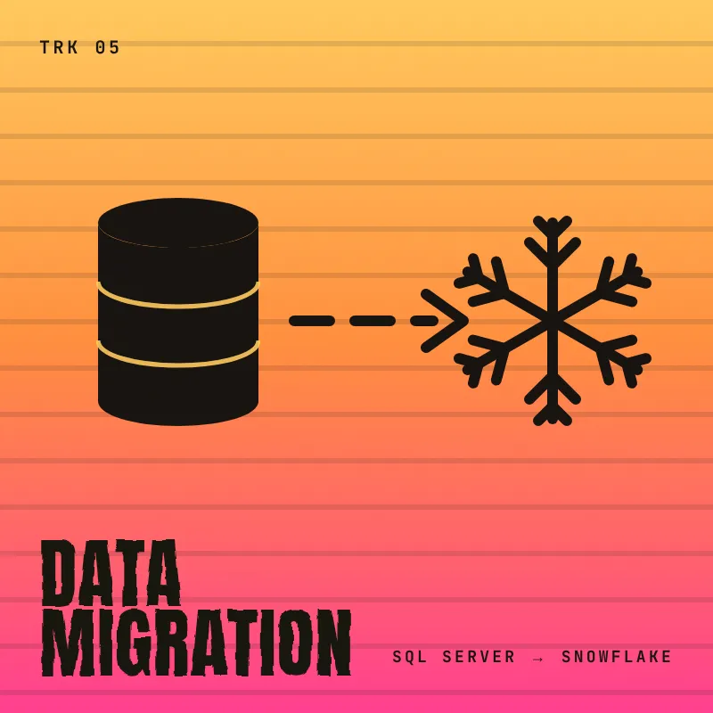

Data Engineering
Designing reliable data flows from ingestion and transformation to warehousing and consumption.
Data & AI Engineer
I work across data engineering, Generative AI, Snowflake, and full-stack development to turn enterprise data and AI capabilities into practical applications.

01 About
Hey, I'm Gaurang — a Data & AI Engineer at Tata Technologies, working at the intersection of Data Engineering, Generative AI, and Full-Stack Development.
I work with Snowflake and modern data platforms to build data pipelines, support enterprise data migration, and develop AI-powered applications such as chatbots, intelligent document solutions, and knowledge platforms.
I enjoy taking ideas from data → AI → application and turning them into practical, end-to-end solutions.
02 What I Build
Data has to move, be trusted, and end up somewhere a person can actually use it. These are the four layers I work across.
Designing reliable data flows from ingestion and transformation to warehousing and consumption.
Building practical AI applications around enterprise data and real-world workflows.
Connecting AI, backend logic, data, and user-facing interfaces into complete applications.
Working with modern platforms for enterprise-scale data engineering and analytics.
Cloud data warehouse
Lakehouse & processing
Hands-on exposure through enterprise data work — listed as engineering concepts I work with, not as proficiency scores.
03 Selected Work
Enterprise data and AI work — knowledge platforms, document intelligence, and the pipelines underneath them.

Trk 02
Trk 0504 AI Experiments
Small systems I build to make engineering work faster.
Built by me + AI Every tool here was developed end-to-end by me — with AI as my co-developer at every step, from the first idea to the working tool.
AI Agent / Developer Productivity
An AI agent I built to turn a screenshot and a short issue description into a structured, detailed bug report.
AI Agent / Developer Productivity
An AI agent designed to understand existing application code and adapt it according to the required application logic.
05 Experience
Oct 2025 — Present
Pune, India
CurrentTata Technologies
Working across data engineering, Generative AI, enterprise applications, and cloud data platforms to build practical data and AI solutions.
12/2023 — 01/2024
Indore, India
InternshipVertisystem
06/2023 — 07/2023
Indore, India
InternshipSwap Infotech
Education
B.Tech — Computer Science Engineering
06 Stack
Grouped by what it's for, rather than ranked by an arbitrary number.
Certifications & Badges
Snowflake
Completed foundational Snowflake badges covering core data warehousing and platform concepts.
Badge
Snowflake
Hands-on training in the AI Data Cloud, building more practical Snowflake skills.
Training
Additional badges and credentials are added here as they're completed.
07 Next Up
The setlist I'm working through next — the areas I want to go deeper into.
08 Contact
Have an interesting problem, idea, or opportunity? I'd love to hear about it.
An enterprise knowledge platform designed to centralize organizational knowledge and make information easier to discover, search, and interact with.
The chatbot is one core capability of the platform — not the whole product.

A metrics platform where teams upload a defined set of data from every organization and its lines of business, then compare it across every financial year — from FY2014 to the current FY.
Illustrative chart
Which metrics are tracked?
Here's the list — with what each one means.
An AI-powered application designed for legal teams to analyze and track uploaded contracts and extract important contractual information.
Illustrative preview
Built to support legal teams' review work — it doesn't give legal advice or make legal decisions.

LiveIn production
An AI-powered resume matching solution, now live in production, designed to evaluate candidate profiles against role requirements.

Contributed to a major enterprise data migration initiative involving the movement of different types of data from traditional Microsoft SQL Server environments into a Snowflake data warehouse.
Azure Data Factory as supporting infrastructure